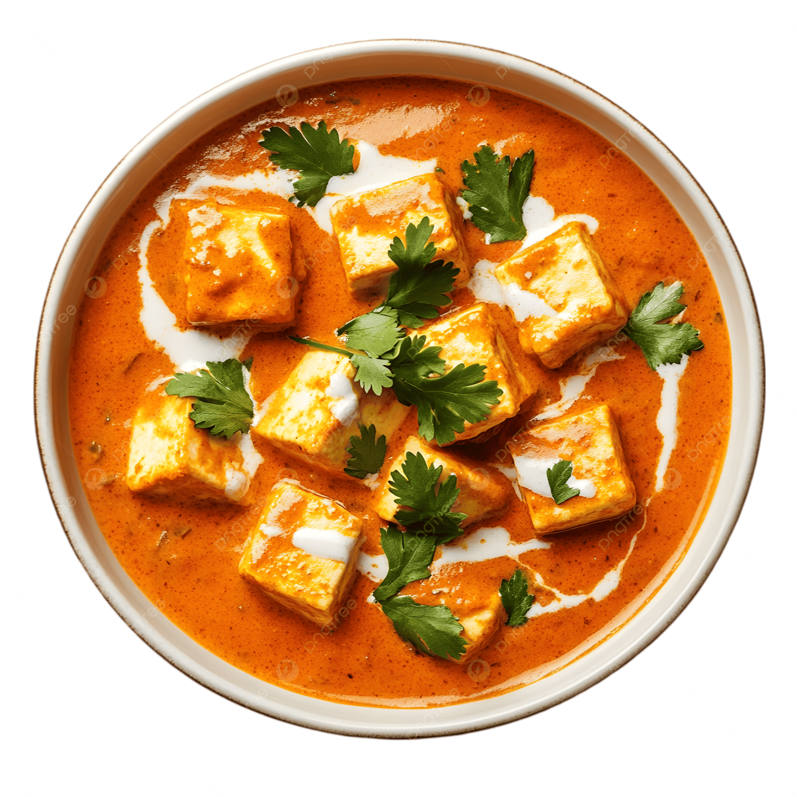

Paneer Butter Masala
⭐⭐⭐⭐⭐ 4.9 Rating | ⏱ 40 Minutes | 🍽 4 Servings
Category
Lunch / Dinner
Difficulty
Medium
Calories
320 kcal
Cooking Style
Indian Curry
📋 Ingredients
- 250 g Paneer (Cubed)
- 2 Tomatoes
- 2 Onions
- 10 Cashew Nuts
- 2 tbsp Butter
- 1 tbsp Fresh Cream
- 1 tsp Ginger Garlic Paste
- 1 tsp Red Chilli Powder
- ½ tsp Turmeric Powder
- 1 tsp Coriander Powder
- ½ tsp Garam Masala
- Salt to Taste
- Fresh Coriander Leaves
🍳 Required Utensils
- Cooking Pan
- Mixer Grinder
- Knife
- Cutting Board
- Spatula
- Serving Bowl
📖 Introduction
Paneer Butter Masala is one of the most popular North Indian dishes. Soft paneer cubes are cooked in a rich, creamy tomato gravy prepared with butter, cream, spices, and cashews. It is commonly served with naan, roti, or jeera rice.
🔬 Principle
The smooth tomato-cashew gravy combined with butter and cream creates a rich texture. Paneer is added at the end so it stays soft and absorbs the flavors without becoming chewy.
👨🍳 Procedure
- Heat butter in a pan.
- Add onions and sauté until golden.
- Add ginger-garlic paste and cook for 2 minutes.
- Add chopped tomatoes and cashew nuts.
- Cook until tomatoes become soft.
- Cool and grind into a smooth paste.
- Heat butter again and pour the paste.
- Add turmeric, chilli powder and coriander powder.
- Cook until butter separates.
- Add water to adjust the consistency.
- Add paneer cubes carefully.
- Add fresh cream and garam masala.
- Cook for 3–4 minutes.
- Garnish with coriander leaves.
- Serve hot.
⚠ Precautions
- Do not overcook paneer.
- Use fresh tomatoes.
- Cook the gravy properly.
- Add cream at the end.
- Maintain medium flame while cooking.
💡 Chef Tips
- Soak paneer in warm water before cooking.
- Use homemade butter for richer flavor.
- Add a little honey to balance tomato acidity.
- Serve immediately while hot.
🥗 Nutrition Facts
| Nutrient | Amount |
|---|---|
| Calories | 320 kcal |
| Protein | 15 g |
| Carbohydrates | 12 g |
| Fat | 24 g |
🍽 Serving Suggestions
- Butter Naan
- Tandoori Roti
- Jeera Rice
- Plain Rice
- Lachha Paratha
🌿 Health Benefits
- Rich source of protein.
- Contains calcium for strong bones.
- Provides healthy fats for energy.
- Tomatoes supply antioxidants and Vitamin C.
- Paneer helps in muscle growth.
✅ Result
The prepared Paneer Butter Masala should have a rich orange-colored creamy gravy with soft paneer cubes. The dish should have a smooth texture, balanced spices, and a delicious buttery aroma. It is best served hot with naan, roti, or jeera rice.
🎥 Watch Recipe Video
Learn the complete recipe by watching the step-by-step video.
▶ Watch on YouTube